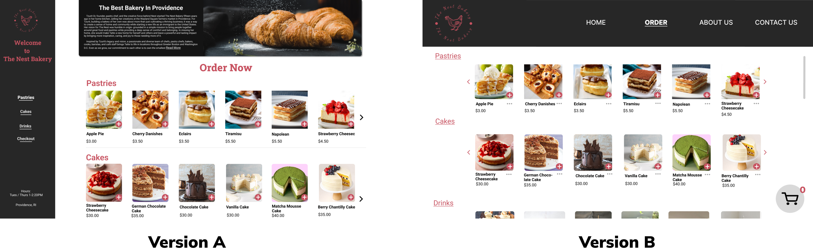
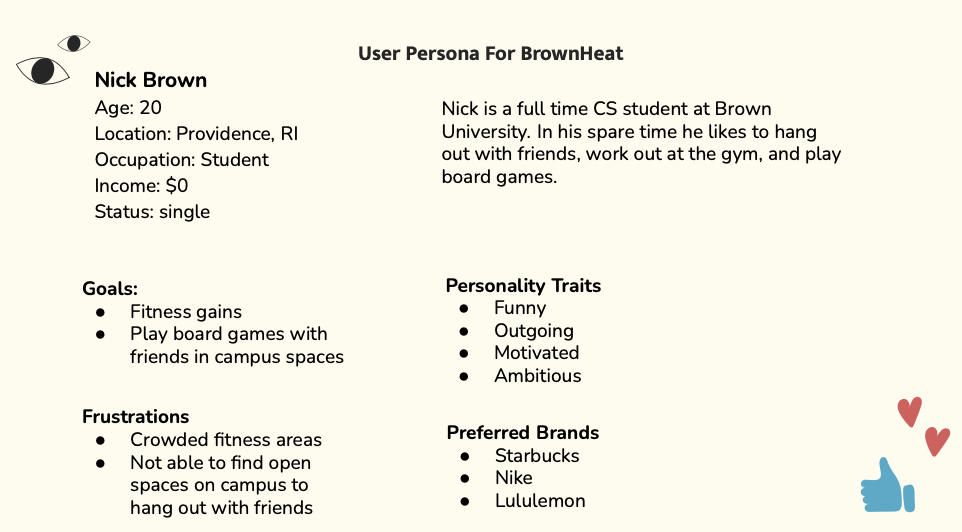
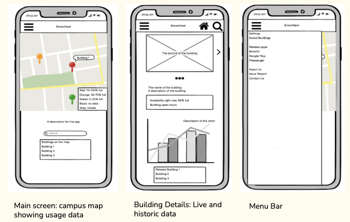
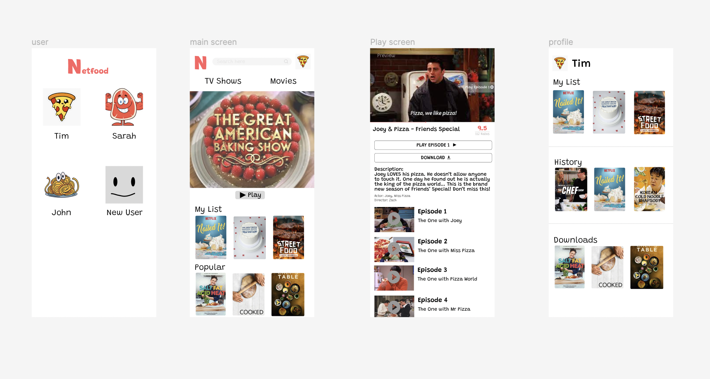
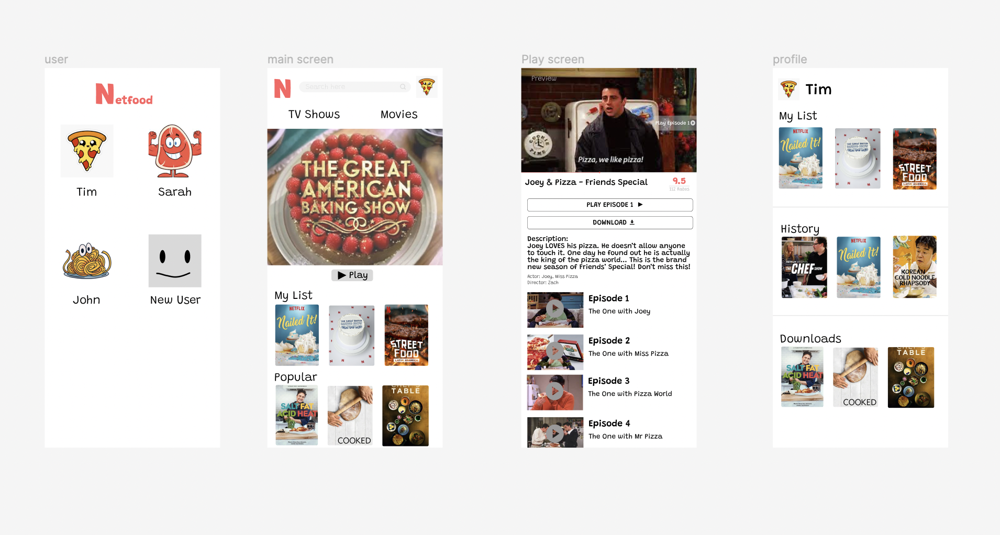

UIUX Projects Done in Class
Overview
All the designs are done less than a week or in 30 mins. These small projects helps me practice design thinking and prototyping skills.
A/B Testing: The Nest Bakery
About the project:
- Created 2 versions of a single page bakery home page
- Randomly presented users one version
- Analyzed eye-tracking data and test hypothesis
- B is better than A
- Users will be confused with the checkout process in version A
- Users' thinking process will be interrupted by the bakery information in version A
Imagine you are in a bakery shop. You have enough money to buy 2 desserts to treat yourself. Please pick the items and proceed to checkout with your eyes.
Two Versions:  Result AnalysisNo, our results did not match our expectations. For version 1 we expected that there would be more confusion around the checkout process, so the replay would show more back and forth movement of the eyes tracking along the screen compared to version 2, but that was not the case. We also thought that the heat map would be more distributed and less concentrated on version 1, but that was not the case either. Version 2 actually showed more variable eye movement while version 1 had more concentrated eye movement.
Note: because two different people tested on two different versions, the variation would be great so it wouldn’t be a fair judgement since two people can go through the checkout process very differently.
Ideation: BrownHeat
About the project:
App Design and Lo-fi Prototyping in 1 hr
Problem Statement:Students at Brown struggle to know if a space on campus (i.e: dinning halls, gym, the main green, etc) is busy or not.
- How might we allow students to view live data about campus building usage?
- How might we allow students to plan optimal times to visit campus buildings?
Brown University Students and Faculty
Persona:
Prototype:
Prototyping: Netflex for Food
Prompt:
Finish a Hi-fi prototype for an imaginary mobile app in 30 min
Final Product: Netflex for food
 

← All Projects